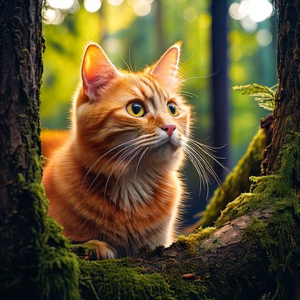

Whiskers: a Journey that Never Ends
As Whiskers grew older, her curiosity never waned, and each new day brought a new adventure to the world she loved to explore. From hidden gardens to towering hills, she wandered with a sense of wonder, always seeking out the mysteries that awaited her. And though she had seen much, Whiskers knew her journey was far from over—there were still countless corners of the world for her to discover.
